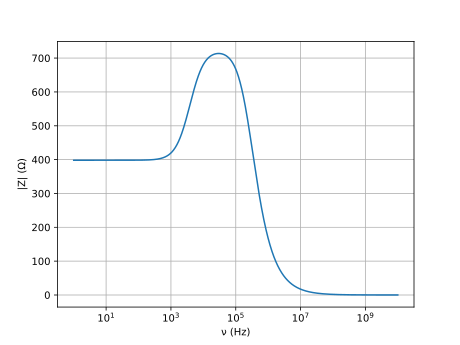
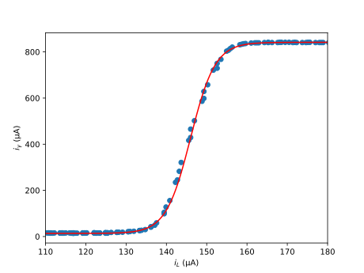
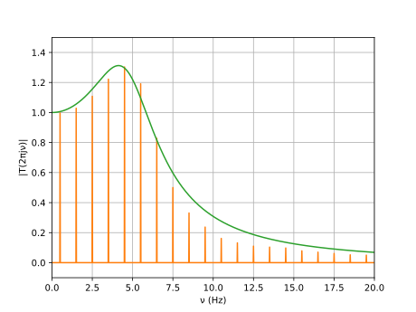

For us to be able to fine tune the controller, we need to know more about the system we're trying to control in the first place.
The galvanometer coil DC resistance had been measured to be 400 Ω. But it could be useful to know its inductance too. This was my first choice of measurement since it seemed to be pretty easy, and for some reason I expected it to be significant. Ultimately though the opposite was the case; it took me a while to get it right (pretty frustrating), and the corrections obtained are negligible for our purposes.
First I regarded the coil as a resistance $R = 400\,\Omega$ in series with an unknown inductance $L$. If we placed the coil in series with a known test resistance $R_{\rm test}$, then at frequency $\nu$, we'd have $$ |Z|^2 = (R+R_{\rm test})^2 + (2\pi\nu L)^2 $$ where $Z$ denotes the impedance of the whole circuit. If the circuit is driven by a voltage $V$ at frequency $\nu$, and $V_{\rm test}$ is the voltage across the test resistor, then $$ |Z| = \frac{|V|}{|I|} = \frac{|V|}{|V_{\rm test}|}R_{\rm test} $$ This was appropriate because only one channel in the oscilloscope was working, and so we could not measure phase, only magnitude. To measure $L$ then, drive the circuit with a sinusoid of known amplitude $|V|$ and frequency $\nu$, measure $|V_{\rm test}|$, and use the two equations.
Here are the results of one battery of such tests:
| Rtest (Ω) | ν (kHz) | |Z| (Ω) | L (mH) |
|---|---|---|---|
| 330 | 0.5 | 780 | 87.5 |
| 0.6 | 780 | 72.9 | |
| 0.7 | 746 | 34.9 | |
| 0.8 | 746 | 30.6 | |
| 0.9 | 746 | 27.2 | |
| 1 | 746 | 24.5 | |
| 2 | 765 | 18.2 | |
| 3 | 801 | 17.5 | |
| 4 | 801 | 13.1 | |
| 5 | 841 | 13.3 | |
| 6 | 886 | 13.3 | |
| 7 | 868 | 10.7 | |
| 8 | 917 | 11.0 | |
| 10 | 971 | 10.2 | |
| 14 | 1011 | 7.6 |
Clearly something's wrong. I performed several such measurements, with frequencies ranging from 100s of Hz to a few MHz, with different values for $R_{\rm test}$, and later then even other circuit arrangements, until I gave up on this "series RL" model for the coil. I briefly considered other coil models (one with a parallel capacitor to account for winding capacitance for example), but then I realized we didn't really need any model; we could just regard the coil as an "abstract" (2nd order) system. And, even more importantly, we just had to measure its step response to deduce all its properties.
|
|
|

|

|
Now I placed the coil in series with a 10 kΩ resistor, applied a 500 mV step to the circuit, and measured the voltage across the coil; the result is the picture in the top left. I didn't like it that much, and so I added a 10 nF cap in parallel with the coil to make things smoother, resulting in the remaining three pictures.
From the knowledge that the height of the step is 500 mV × 400 Ω / 10400 Ω = 500 mV / 26 = 19.23 mV, and that in the last (bottom right) picture there is 10 μs / div., we find the following expression for the coil step response: $$ y(t) = 19.23\,{\rm mV} \cdot (1 + 1.26 \cdot e^{-t\cdot 30\,{\rm krad/s}}-2.26 \cdot e^{-t\cdot122\,{\rm krad/s}}) $$ This expression can be found for example by looking at the coordinates of the critical point $\dot y=0$. Now take the Laplace transform and divide both sides by the transformed input step $$ X(s) = \frac{500 \, {\rm mV}}s $$ to obtain \begin{align} T(s) = \frac{Y(s)}{X(s)} &= \frac1{26}\cdot\left(1+\frac{1.26s}{s+30\,{\rm krad/s}}-\frac{2.26s}{s+122\,{\rm krad/s}}\right) \\ &= \frac{(9.15\,{\rm krad/s})(s+15.38\,{\rm krad/s})}{(s+30\,{\rm krad/s})(s+122\,{\rm krad/s})} \end{align} Now, to get the galvanometer's impedance $Z$, write $$ T = \frac{Z'}{Z'+R} \qquad Z' = Z \parallel (sC)^{-1} \qquad { {R = 10 \, {\rm k\Omega}} \atop {C = 10 \, {\rm nF}} } $$ to obtain $$ Z = Z' \parallel (-sC)^{-1} \qquad Z' = \frac R{\frac1T-1} $$ $$ Z = 1.08\,{\rm k\Omega} \cdot \frac{(1 \,{\rm Mrad/s})(s+15.38\,{\rm krad/s})}{(s+1.49\,{\rm Mrad/s})(s+28\,{\rm krad/s})} $$ Notice how $1/Z$ possesses a pole at infinity, corresponding to a parallel cap. Removing this additive factor, the remainder can be decomposed into partial fractions to yield $$ \frac1Z = \frac1{720\,{\rm\Omega}} + \frac1{890\,{\rm\Omega}+s\cdot58\,{\rm mH}}+s\cdot926\,{\rm pF} $$ which does suggest a circuit equivalent. It would be interesting to see if this value $L = 58 \,{\rm mH}$ is supported by other inductance measurements (for example, relating magnetic field and coil current).

Here's a plot:
At this point it's interesting to test the formula obtained for $Z$ against our experiments. For example, below we have compared the values of $|330\,\Omega+Z|$ calculated from the formula and obtained from the experiment we mentioned earlier.
| ν (kHz) | |330 Ω + Z| (Ω) | Error (%) | |
|---|---|---|---|
| Measured | Calculated | ||
| 0.5 | 780 | 734.9 | 6.0 |
| 0.6 | 780 | 737.0 | 5.7 |
| 0.7 | 746 | 739.5 | 0.9 |
| 0.8 | 746 | 742.3 | 0.5 |
| 0.9 | 746 | 745.5 | 0.1 |
| 1 | 746 | 748.9 | 0.4 |
| 2 | 765 | 794.5 | 3.8 |
| 3 | 801 | 845.9 | 5.5 |
| 4 | 801 | 890.9 | 10.6 |
| 5 | 841 | 926.4 | 9.7 |
| 6 | 886 | 953.3 | 7.3 |
| 7 | 868 | 973.3 | 11.4 |
| 8 | 917 | 988.4 | 7.5 |
| 10 | 971 | 1008.7 | 3.8 |
| 14 | 1011 | 1028.7 | 1.7 |
| Average: | 4.99 | ||
I'd say that's a good agreement, even moreso when considering how indirect our measurement was.
We notice though that the approximation $Z = 400 \,\rm\Omega$ is good until about 1 kHz; and at these and higher frequencies, the spring should not respond at all in any case.
To measure the behavior of the optical switch, we run a slowly varying current through the coil, so that both the coil and the spring have time to respond.
The key takeaway here is that we have a roughly 10-μA-wide linear window (in terms of $i_L$ swing) (from later coil current × deflection measurements, this can be seen to correspond to about 0.75 mm), inside of which $$ A = \frac{\Delta i_\gamma}{\Delta i_L} \approx 55 \,\rm A/A $$ A pretty good fit can be found in terms of the hyperbolic tangent too, which could be used to correct for measurements near different operating points.
The mechanical portion of the system can reasonably be considered to be a damped harmonic oscillator; like in the case of the coil then, the step response contains the information we want.
On driving the system with small steps we find that the system is underdamped. In this case the frequency response can easily be estimated by looking at the critical points $\dot y = 0$; from the distance between critical points we can deduce the oscillation frequency $\omega_0$, and from their heights, the decay constant $\lambda$ (the critical points lie on the exponential envelope). Further from mechanical considerations we see that for our system we have a critical point at $t=0$. In that case we have $$ y(t) = A\left( 1 - \frac{e^{-\lambda t}\sin(\omega_0 t + \phi_0)}{\sin\phi_0}\right) \qquad \phi_0 = \tan^{-1}\frac{\omega_0}\lambda \qquad T(s) = A\frac{\lambda^2 + \omega_0^2}{(s+\lambda)^2+\omega_0^2} $$
We could use the information from the previous measurements to correct for the nonlinearity in the optical switch, but I didn't bother with it; I think $i_\gamma$ here varied between 140 and 180 μA, which is not right in the middle of the linear region, but still, not that bad. There was also a lot of noise during this particular measurement; my first course of action was removing all frequencies that couldn't have been in the driving ½ Hz square wave in the first place (a linear system doesn't introduce new frequencies). All that jaggedness though, it was due to an odd peak at 73.5 Hz, which I removed manually.
Anyway, we find
\begin{array}{2} \begin{align} \lambda &= 13.5 \\ \omega_0 &= 2\pi \times 4.65 = 29.2 \end{align} && ({\rm s^{-1}}) \end{array}The data here was collected with the Arduino (as opposed to the scope), and in this "digital" format then, maybe there were better ways of finding the poles. For example the Fourier coefficients of the data divided by those of a pure square wave would give the values of the transfer function at those frequencies, what might be a better dataset to fit our curves to. Here's the fit we found earlier from this angle, for example.
